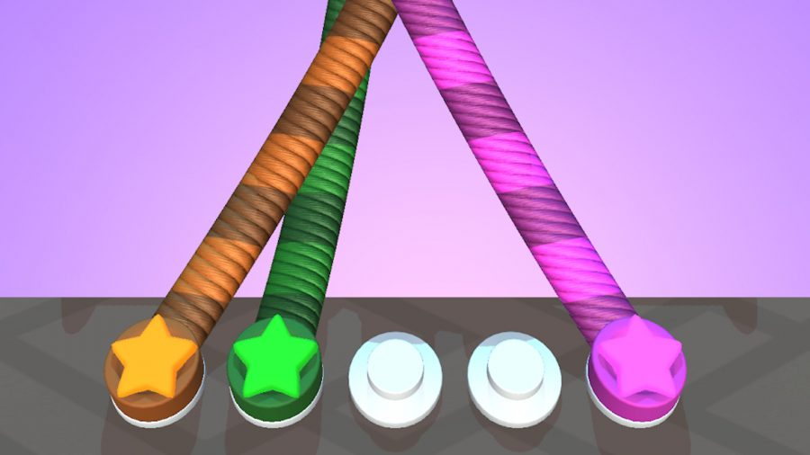

Introduction
Do you like untangling knots? Then boy, is Tangle Master 3D a treat for you. This mobile puzzler provides you with a countless number of tangled up pieces of coloured rope to, err, untangle. It starts simple, with you just having to untangle two ropes, but quickly increases in challenge, with multiple ropes looking like a right mess.

But
why are you bothering to do this? Well, partially because it’s fun, and
a
decent little brain workout, but also because you can earn coins that
let you
unlock new cosmetics, like new rope designs, nails, and more. Aside
from
showing off how far you’ve got to your friends, that’s the only
real draw
of Tangle Master 3D.
We
want to be able to help you with your untangling plights, and help you
unlock
all of the fancy designs, so have put together a Tangle Master 3D
guide, which
provides you with all of the tips, tricks, and cheats you need to get
started.
We’ll detail the basics of how to untangle notes and provide you with
advice on
how to maximise your income.